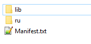

Главная
Java
JAR
Чтобы JAR-файл был исполняемым, он должен содержать файл MANIFEST.MF в каталоге META-INF, в котором должен быть указан главный класс программы (такой класс должен содержать метод main и задаётся параметром Main-Class). Номер версии JAR задаётся параметром Manifest-Version и является обязательным.
1) Создаем файл Manifest.txt :
Manifest-Version: 1.0
Main-Class: ru.jf17.ide.gui.Main
Class-Path: ./zlib/autocomplete-2.6.1.jar ./zlib/rsyntaxtextarea-2.6.1.jar
Обязательно сделать перевод строки вконце файла Manifest.txt!
2) компилируем:
jar cvfm MyJar.jar Manifest.txt имя_папки_с_классами имя_папки_с_библиотеками имя_папки_с_ресурсами

3) запускаем
java -jar MyJar.jar